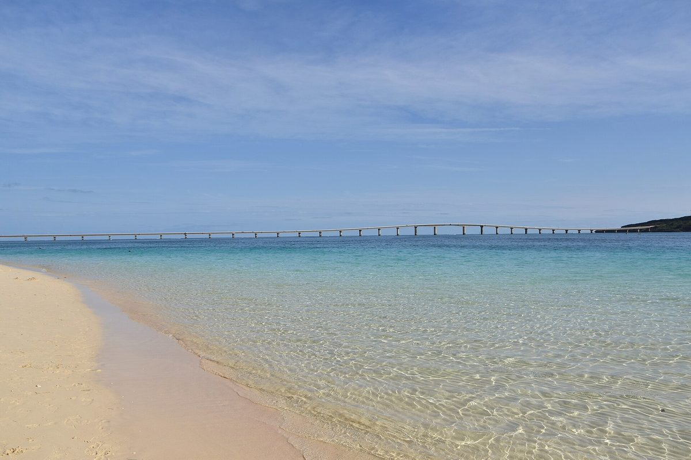

「宮古藍」不是行銷詞，是真的跟本島的海不一樣。這座島沒有定期渡輪、景點之間也散，所以玩法很單純——租台車，沿著海慢慢開。
旺季（夏天）租車很搶手，機票訂好就先訂車，這是順序。
伊良部大橋、來間大橋、池間大橋——跨海自駕是宮古的招牌。光線好的早上開過去，海的層次最清楚；下午逆光就可惜了。
白天的白砂很美，但在地的玩法是傍晚再回去一趟——夕陽落在來間大橋後面，人也少了一半。
宮古的好，是「沒有要去哪裡」的下午。留半天給海景咖啡和臨時起意，比多塞一個景點值得。
航班、租車、行程怎麼排——之後可以直接敲我們（SNS 準備中）。先看看我們想做的事。